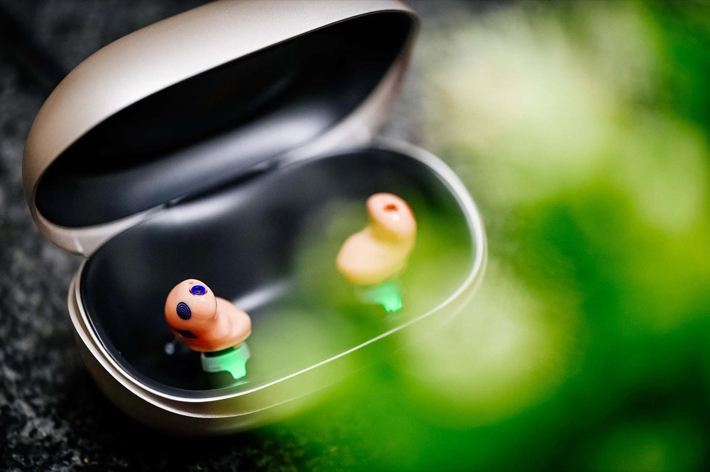

Ihr Hörakustiker in Rösrath
Johannes
Penzel
Inhaber & Hörakustiker
Ich glaube, dass gutes Hören mehr ist als Technik — es ist die Verbindung zu den Menschen, die Ihnen wichtig sind. Beim Hoffnungsohr nehme ich mir die Zeit, die es braucht, damit Sie wirklich hören können.
Über mich
Hörgeräte faszinieren mich seit meiner Ausbildung: hochmoderne Meisterwerke auf kleinstem Raum, die Menschen zurück in ihr Leben bringen. Als Inhaber des Hoffnungsohr stehe ich persönlich für jede Anpassung — ohne Konzernvorgaben, ohne Zeitdruck, ohne Kompromisse bei Ihrer Versorgung.
Mit der Hoffnungsohr-Target nutzen wir eine präzise Anpassungsmethode, die sicherstellt, dass Ihr Hörgerät nicht einfach nur eingestellt ist — sondern exakt auf Ihr Gehör, Ihren Alltag und Ihre Hörsituationen abgestimmt wird. Das Ergebnis: ein natürlicheres Klangbild von der ersten Minute an.
Hoffnungsohr ist spezialisiert auf kleinste, nahezu unsichtbare Hörgeräte mit Bluetooth-Verbindung zu Smartphone und Fernseher — damit Sie modernste Technologie genießen, ohne dass es jemand bemerkt.
Inhabergeführt
Kein Konzern im Hintergrund. Sie sprechen immer direkt mit mir — vom ersten Hörtest bis zur Nachsorge.
Hoffnungsohr-Target
Präzise Anpassung nach Messung, nicht nach Durchschnitt. Ihr Gehör ist einzigartig — Ihre Versorgung auch.
Zeit für Sie
Ausführliche Beratung ohne Termindruck. Ich begleite Sie so lange, bis Sie sich wirklich sicher fühlen.
„Transparente Beratung, modernste Technologie und stets ein offenes Ohr — das ist mein Versprechen an jeden Kunden." Johannes Penzel
